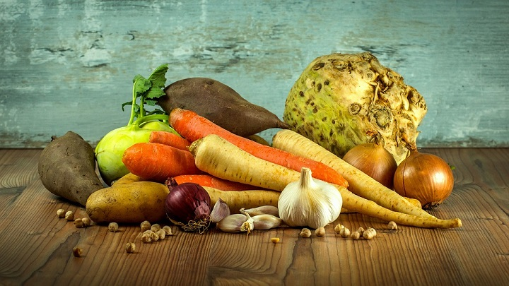
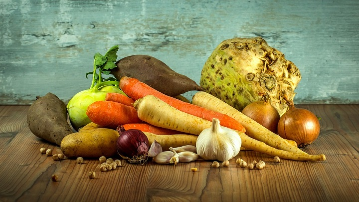

Herbal Teas
 


Herbal teas, also known as herbal infusions and less commonly[2] called tisanes (UK and US /tɪˈzæn/, US also /tɪˈzɑːn/),[3] are beverages made from the infusion or decoction of herbs, spices, or other plant material in hot water. Oftentimes herb tea, or the plain term tea, is used as a reference to all sorts of herbal teas. Many herbs used in teas/tisanes are also used in herbal medicine. Some herbal blends contain actual tea (e.g., the Indian classic masala chai).
The term "herbal" tea is often used in contrast to traditionally caffeinated teas (e.g., black, green, white, yellow, oolong), which are prepared from the cured leaves of the tea plant, Camellia sinensis. Unlike true teas (which are also available decaffeinated), most tisanes do not naturally contain caffeine.[4][5] There are a number of plants, however, that do contain caffeine or another stimulant, like theobromine, cocaine or ephedrine. Some have the opposite effect, acting as a sedative. Some common infusions have specific names such as mate (yerba mate) and rooibos (red bush).
Some feel[clarification needed] that the term tisane is more correct than herbal tea or that the latter is even misleading, but most dictionaries record that the word tea is also used to refer to other plants beside the tea plant and to beverages made from these other plants.[6][7] In any case, the term herbal tea is very well established and much more common than tisane.[2] learn more